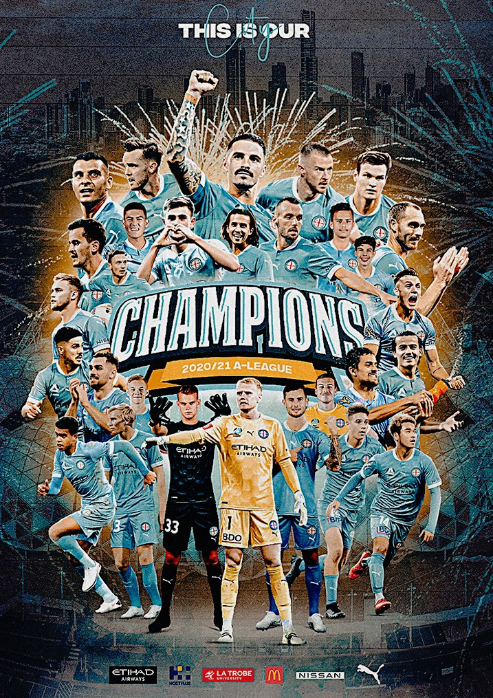
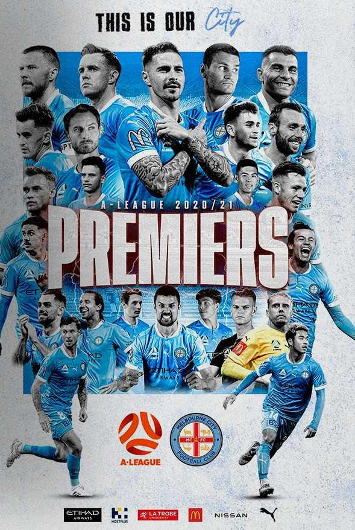
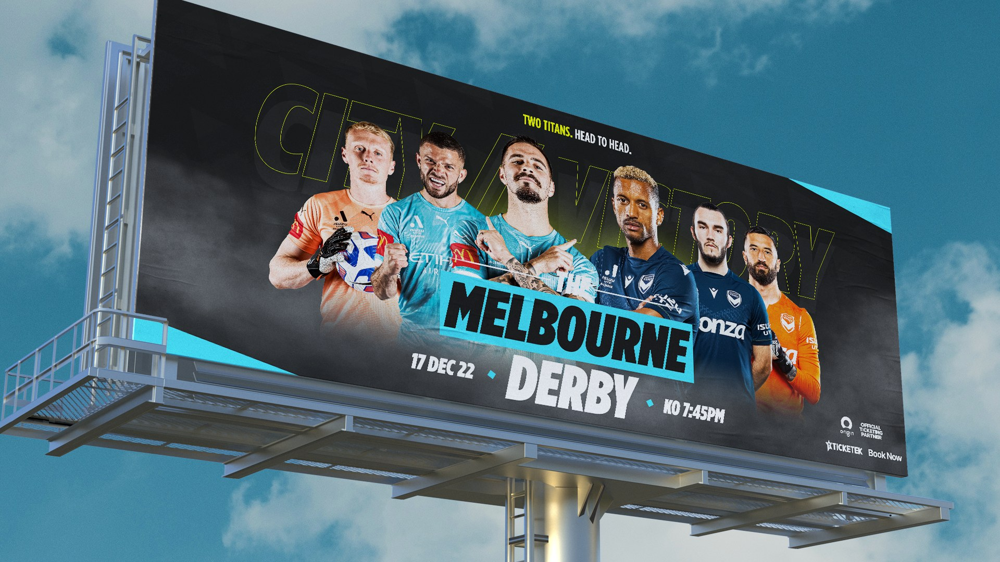
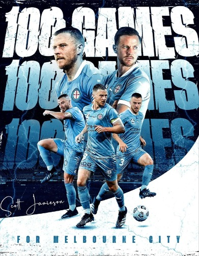
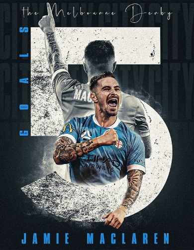
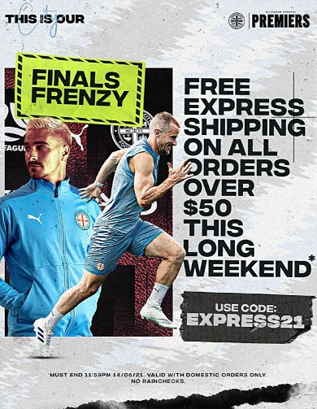
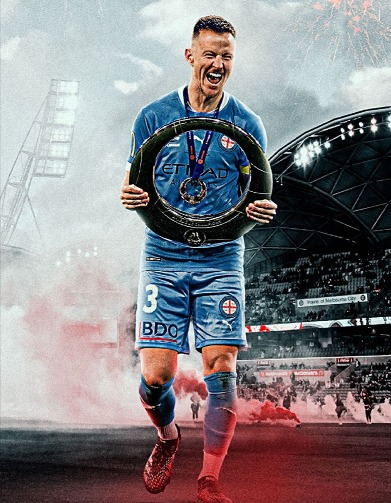

06 / This is our City.
Work for Melbourne City FC in the A-League, from title-winning posters and derby billboards to the club's social feed. I also worked on a full redesign of the club's website, written up as its own UX case study.
Campaign · Print · Out-of-home · Social
Commemorative posters for the 2020/21 A-League season, when City won both the Premiership and the Championship. Two posters, one squad, each built to feel like a trophy on the wall.


Out-of-home campaign for the Melbourne Derby. Two titans, head to head: City and Victory's biggest names lined up on one billboard to sell the city's biggest game.

Social content for milestones, derby heroes, merch drops and silverware, each one built to stop the scroll.



